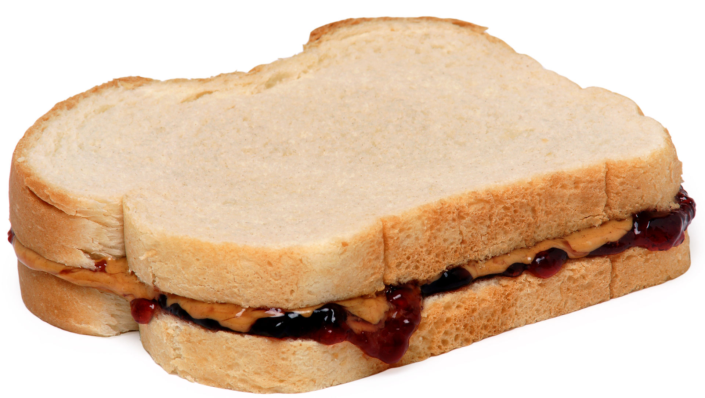

HOW TO MAKE AN TRADITIONAL PEANUT BUTTER AND JELLY SANDWICH
Ingredients
- Peanut Butter (Skippy or Jif)
- Jelly Jam (Smuckers or Welchs)
- 2 slices of bread (normal or toasted)
Directions
- Spread the peanut butter on one piece of bread
- Spread the jelly on the other side.
- Put the two pieces of bread together to form a sandwich.
- Toddler adaptation: cut off crusts before serving.
